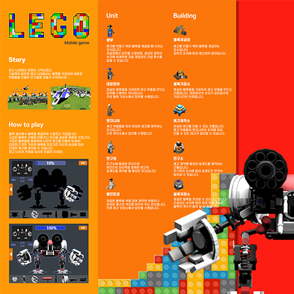
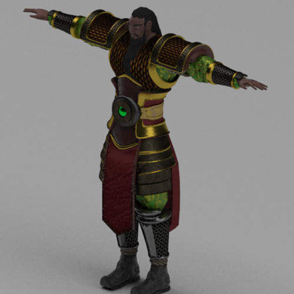

노래방에서 사용이 가능한 애플리케이션 기획을 웹페이지를 통해 홍보하는 웹디자인을 기획하였습니다. 노래방 반주기를 휴대전화를 이용하여 조작 가능하게 하여 장점들을 확보하였고 이러한 기획을 지니뮤직과 TJ노래방에 제안하는 페이지를 만들었습니다.

Multimedia Design레고
레고를 모티브로 한 모바일게임입니다. 레고를 만들기 위한 블록을 채굴하여 레고를 만들 수 있습니다. 레고를 만들 때에는 블록을 먼저 가공하여 레고의 부품으로 만든 후 제작과정을 거쳐서 완성된 레고를 만들 수 있습니다. 블록은 레고 제작 외에도 건물이나 유닛 등을 생성할 재화로 쓰일 수 있습니다.

Moving Image Animation관우
청룡언월도를 든 관우입니다. 기존의 관우의 이미지와 흡사하지만 포인트를 짚어서 제작하였습니다. 관우의 장비와 옷가지들은 녹색과 금색을 주로 사용하였고 애니메이션 작업엔 관우가 청룡언월도를 휘두르며 포즈를 취하는 것이 적용되었습니다.